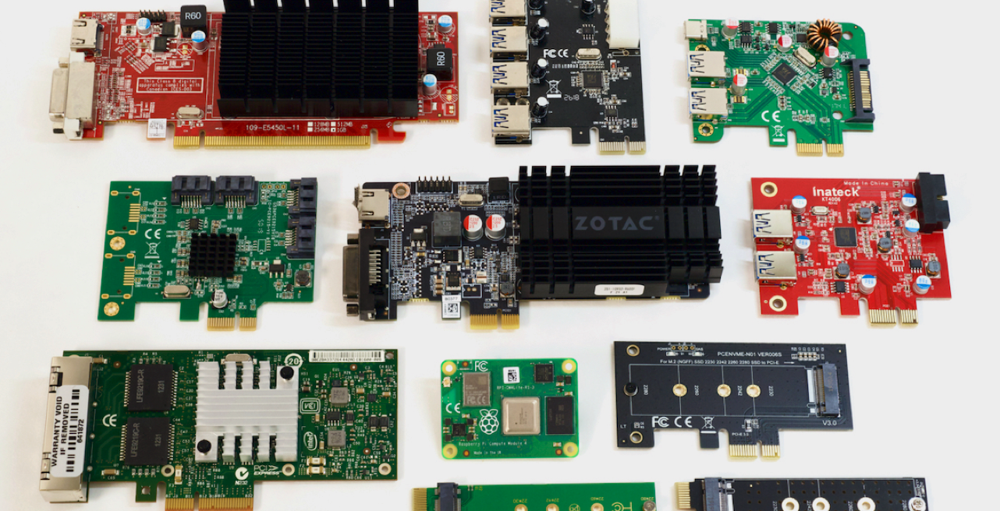
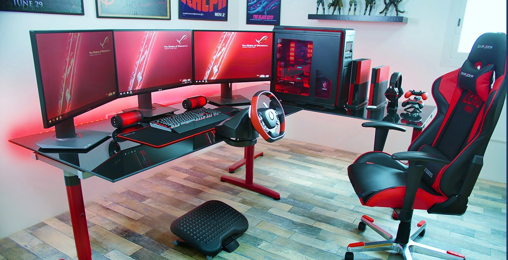
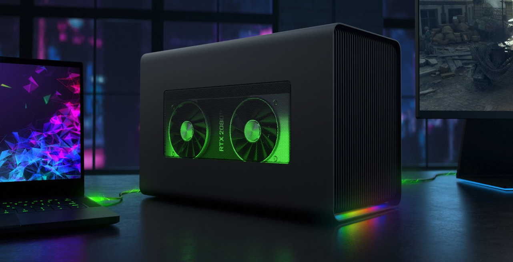
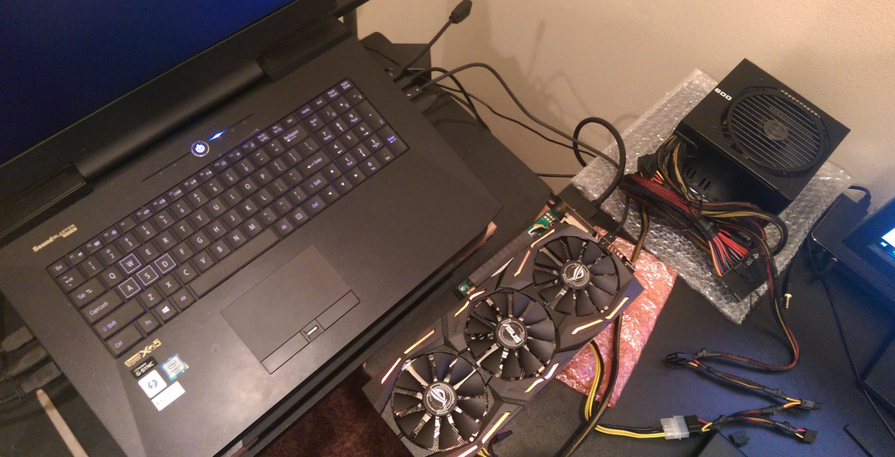

Peripheral Devices
For me, I think there are 2 types of peripheral devices, one that is inside the computer, another one that is outside the computer.
Part 1 - About "peripheral devices" that are inside the computer
Part 2 - About peripheral devices that are outside the computer
Part 1
Peripheral devices that are inside the computer are something like GPU, USB port expand a card, sound card, WIFI/Bluetooth card something like that. These devices need PCIe slots on the motherboard. It will be affected due to the number of PCIe slots on your motherboard. Some devices that don't need PCIe slots to use are fans, LED lights, RGB devices and probably more. These devices usually need 3 pin headers of 4 pin headers that are on the motherboard.

Part 2
Peripheral devices that are outside the computer are something like a keyboard, mouse, printer, speaker, microphone, headset, monitor, eGPU and more. It can be either connected in wired with USB-A, USB-C and USB-C Thunderbolt 3 and 4 or wirelessly with Bluetooth or 2.5GHz frequency band. Mostly these devices use USB A and C, Bluetooth or 2.5GHz frequency band to connect. But only the eGPU is slightly different, eGPU stands for external graphics processing unit.

eGPU
In the PCIe article, I did mention that GPU needs PCI express slots to use, so Intel developed the Thunderbolt protocol. Thunderbolt 3 and 4 are using PCIe x4, so it's perfect for eGPU. In theory, Thunderbolt 3 and 4 suppose to hit 40Gb per second. But because Thunderbolt 3 needs to communicate to the chipset/Southbridge first, then communicate to the CPU like other USB ports. It makes the speed are much slower than PCIe x4. What Intel did to Thunderbolt 4 is, they specifically made it directly communicates to the CPU. Thus, without changing the PCIe bandwidth, Thunderbolt 4 speed is faster than Thunderbolt 3.

eGPU can connect to the laptop by using Thunderbolt 3 and 4. But Thunderbolt 3 and 4 external GPU cases are extremely expensive, not most people can afford them, so we have a cheap solution - using M.2 port for eGPU. M.2 port is another version slot of PCIe, and it uses the same bandwidth as Thunderbolt, so some eGPU kits are using M.2 as a connecter instead of USB-C Thunderbolt. It seems perfect, but it's not. If you going to use the cheap version of eGPU, then you have to teardown your laptop and I think all the M.2 version eGPU are a bit ugly compare to these Thunderbolt eGPU cases.

That's most of the things I want to say about peripheral devices, you won't see me talking about some peripheral devices like printers or keyboard these devices because I don't think it's something that most people don't know and it's not related to computer hardware, it's not necessary.
Contact Me: Ignore or change this